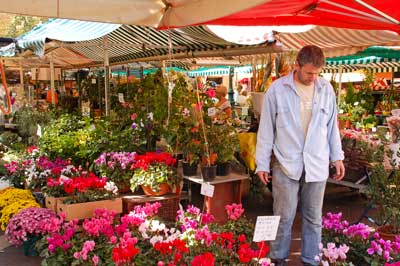

Nice is a jewel of the Côte d’Azur in Southern France. Surrounded by mountains, its crescent-shaped bay faces the Mediterranean, blessing it with a mild winter climate. Even when the mountains are covered in snow, the town normally remains snow-free.